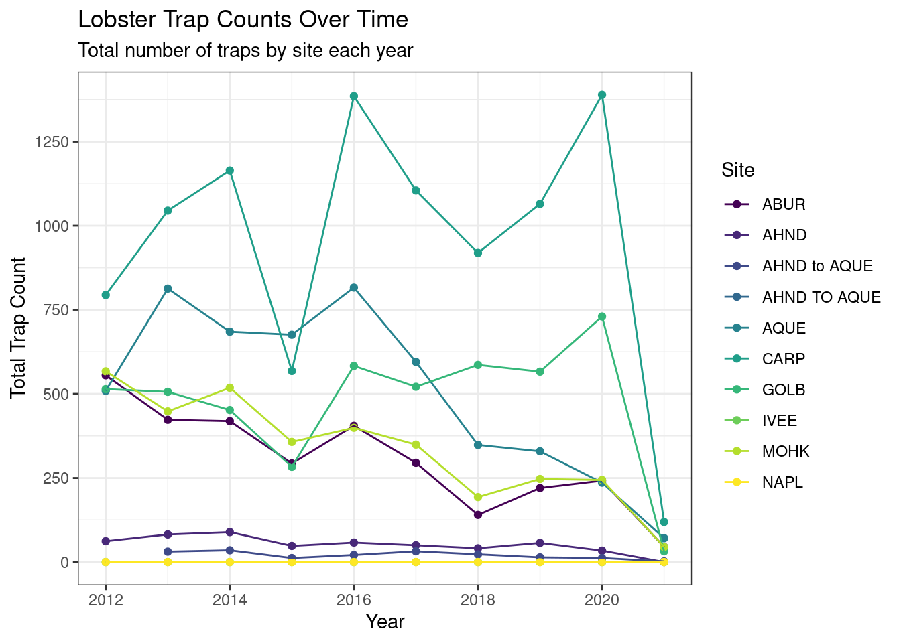

library(readr)
library(dplyr)
library(ggplot2)
library(tidyr)Collaborator Analysis
Exercise: Explore, Clean, and Wrangle Data
Set up
Read data
lobster_traps <- read_csv("../data/Lobster_Trap_Counts_All_Years_20210519.csv")Explore data
colnames(lobster_traps) [1] "YEAR" "MONTH" "DATE" "FISHING_SEASON"
[5] "SITE" "SEGMENT_START" "SEGMENT_END" "TRAPS"
[9] "OBSERVER" "NOTES" glimpse(lobster_traps)Rows: 11,071
Columns: 10
$ YEAR <dbl> 2012, 2012, 2012, 2012, 2012, 2012, 2012, 2012, 2012, 2…
$ MONTH <dbl> 10, 10, 10, 10, 10, 10, 10, 10, 10, 10, 10, 10, 10, 10,…
$ DATE <date> 2012-10-05, 2012-10-05, 2012-10-05, 2012-10-05, 2012-1…
$ FISHING_SEASON <chr> "2012-2013", "2012-2013", "2012-2013", "2012-2013", "20…
$ SITE <chr> "ABUR", "ABUR", "ABUR", "ABUR", "ABUR", "ABUR", "ABUR",…
$ SEGMENT_START <chr> "119 44.950", "119 44.900", "119 44.850", "119 44.800",…
$ SEGMENT_END <chr> "119 44.900", "119 44.850", "119 44.800", "119 44.750",…
$ TRAPS <dbl> 16, 13, 21, 10, 10, 6, 2, 0, 5, 7, 11, 17, 10, 15, 13, …
$ OBSERVER <chr> "Matt Kay", "Matt Kay", "Matt Kay", "Matt Kay", "Matt K…
$ NOTES <chr> "FIXED Start/Stop", "FIXED Start/Stop", "FIXED Start/St…head(lobster_traps)# A tibble: 6 × 10
YEAR MONTH DATE FISHING_SEA…¹ SITE SEGME…² SEGME…³ TRAPS OBSER…⁴ NOTES
<dbl> <dbl> <date> <chr> <chr> <chr> <chr> <dbl> <chr> <chr>
1 2012 10 2012-10-05 2012-2013 ABUR 119 44… 119 44… 16 Matt K… FIXE…
2 2012 10 2012-10-05 2012-2013 ABUR 119 44… 119 44… 13 Matt K… FIXE…
3 2012 10 2012-10-05 2012-2013 ABUR 119 44… 119 44… 21 Matt K… FIXE…
4 2012 10 2012-10-05 2012-2013 ABUR 119 44… 119 44… 10 Matt K… FIXE…
5 2012 10 2012-10-05 2012-2013 ABUR 119 44… 119 44… 10 Matt K… FIXE…
6 2012 10 2012-10-05 2012-2013 ABUR 119 44… 119 44… 6 Matt K… FIXE…
# … with abbreviated variable names ¹FISHING_SEASON, ²SEGMENT_START,
# ³SEGMENT_END, ⁴OBSERVERunique(lobster_traps$YEAR) [1] 2012 2013 2014 2015 2016 2017 2018 2019 2020 2021unique(lobster_traps$SITE) [1] "ABUR" "AHND" "AQUE" "CARP" "GOLB"
[6] "IVEE" "MOHK" "NAPL" "AHND to AQUE" "AHND TO AQUE"unique(lobster_traps$TRAPS) [1] 16 13 21 10 6 2 0 5 7 11
[11] 17 15 14 12 8 18 9 4 1 3
[21] 19 20 -99999 44 31 22 26 30 33 32
[31] 23 27 24 28 29 25Clean data
lobster_traps <- lobster_traps %>%
mutate(TRAPS = na_if(TRAPS, -99999))
unique(lobster_traps$TRAPS) [1] 16 13 21 10 6 2 0 5 7 11 17 15 14 12 8 18 9 4 1 3 19 20 NA 44 31
[26] 22 26 30 33 32 23 27 24 28 29 25Create subset without NAPL site
not_napl <- lobster_traps %>%
filter(SITE != "NAPL")Create subset with data from CARP or number of floats > 20
carp_20_traps <- lobster_traps %>%
filter(SITE == "CARP" | TRAPS > 20)Exercise: Data Visualization
lobsters_traps_summarize <- lobster_traps %>%
group_by(SITE, YEAR) %>%
summarize(TOTAL_TRAPS = sum(TRAPS, na.rm = TRUE))# line and point plot
ggplot(data = lobsters_traps_summarize, aes(x = YEAR, y = TOTAL_TRAPS)) +
geom_point(aes(color = SITE)) +
geom_line(aes(color = SITE)) +
labs(x = "Year",
y = "Total Trap Count",
color = "Site",
title = "Lobster Trap Counts Over Time",
subtitle = "Total number of traps by site each year") +
theme_bw() +
scale_y_continuous(breaks = seq(0, 2100, 250)) +
scale_color_viridis_d()
lobster_traps_fishing_pressure <- lobster_traps %>%
filter(YEAR %in% c(2019, 2020, 2021)) %>%
mutate(FISHING_PRESSURE = if_else(TRAPS >= 8, true = "high", false = "low")) %>%
group_by(SITE, FISHING_PRESSURE) %>%
summarize(COUNT = n()) %>%
drop_na()# dodged bar plot
ggplot(data = lobster_traps_fishing_pressure, aes(x = SITE, y = COUNT, fill = FISHING_PRESSURE)) +
geom_col(position = "dodge") +
labs(x = "Year",
y = "Count",
fill = "Fishing Pressure",
title = "Lobster Trap Counts",
subtitle = "Total number of traps counts by site") +
coord_flip() +
theme_bw() +
theme(legend.position = "bottom",
axis.ticks.y = element_blank()) +
scale_y_continuous(breaks = seq(0, 650, 100))